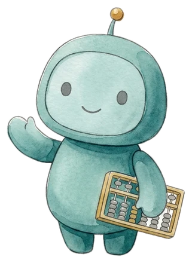

サイバーシルクロード八王子 御中
2026年11月 fulfull株式会社
会員向けセミナー ご検討資料
会員企業を、
人が辞めても、
仕事が止まらない
会社へ。
AIに聞いて終わり、ではありません。
毎月の事務をAIに任せて「自動で回る」ところまでを扱う、会員向けセミナーのご提案です。
特定の事業者に偏らない運営の形も、あわせてまとめました。

30秒でわかる、このご提案
- ちがい
- 多くのAI研修が扱うのは「AIに聞く・作らせる」までです。
この会は、事務をAIに任せて、人が毎回触らなくても回る「自動化」の入口までを扱います（2章）。 - なにを
- 会員企業が、毎月くり返す事務を1つ選び、AIで「自動で回る形」にする入口までを体験する、1時間半のセミナー（講義1時間＋質疑応答30分）
- だれに
- 会員企業の経営者・事務担当の方（15名程度）
- なぜいま
- 中小企業の6割が人手不足です。
11月19日のAI体験セミナーに続く「次の一歩」としてご案内できます。 - 御会のご負担
- いつものセミナーと同じ範囲です。
日程と会場（プロジェクター・Wi-Fi・電源）、告知、申込と受付、アンケート、締めの5分のご案内。
当日の資料と記入用紙は、こちらで用意します。 - 中立性
- 講座名に事業者名を出さない、講師から営業しない、名簿は御会の規定どおり、事後の相談は御会の窓口とビジネスお助け隊へ。
7つのお約束でお受けします（3章）。
1会員企業の、いまの悩み
6割
人手不足と答えた中小企業の割合です（60.0%）。
そのうち約半数が、事業の運営に影響が出ていると答えています。
出典：日本商工会議所「多様な人材の活躍等に関する調査」（2026年9月公表・2,654社）
現場では、次のような声をよく聞きます。
- 採用にお金をかけても、人が来ない
- せっかく入った若い人が、すぐ辞めてしまう
- あの人が休むと、あの仕事が止まる
あわせて、仕事の煩雑さや、アナログなやり方への戸惑いの声もよく聞きます。
人を増やすだけでなく、「今いる人で回る仕組み」が求められています。
2この会の違いは、「自動化」まで扱うことです
AIの使い方には、3つの段階があります。
多くのAI研修が扱うのは、1と2です。
3を扱う講座も、各地の商工会議所で始まっています（4章）。
11月19日のAI体験セミナーで触れたAIを、次の3「任せて自動で回す」へ進めるのが、この会です。
自社の仕事で3の入口を組み立て、代表の2〜3件は講師の画面で実際に動かして、自動で回る様子をご覧いただきます。
- STEP 1AIに聞く
調べものや相談に使う。
多くのAI研修
人が毎回、聞きに行く。 - STEP 2AIに作らせる
文章・資料・議事録を作る。
多くのAI研修
人が毎回、頼みに行く。 - STEP 3AIに任せて、
自動で回す決めた日時やきっかけで、人が開かなくてもAIが動き出し、毎朝・毎月の事務を手順どおりに進める。
この会
人は確認が中心になる。
自動で回す仕組みは、特定のAIサービスに限りません。
当日は道具の操作よりも、仕事の切り出し方と任せ方の型を中心に扱います。
たとえば、毎月の請求書づくりなら
担当者が毎月AIを開いて、頼み方を考えて作らせる。
担当者が辞めると、AIの使い方も一緒に消える。
月末になると、AIが手順どおりに下書きをそろえておく。
担当者は確認して送るだけで、担当が変わっても同じように回る。
自動化まで行くと、会社はこう変わります
毎月の事務を手順どおりにAIが進めるので、担当者が抜けたときの引き継ぎの穴が小さくなります。
AIへの指示書と手順が、そのまま新人向けのマニュアルになります。
指示書・手順・自動化の流れが、社内に積み上がります。
始めた分だけ、次の人に渡せるものが増えていきます。
多くのAI研修と、この会
多くのAI研修
- AIの使い方や、頼み方のコツを習う
- 資料や議事録を、その都度AIに作らせる
- 使うたびに、人がAIに頼む
この会
- 自社の「毎月くり返す仕事」を1つ選ぶ
- その仕事を、AIが自動で進める指示書にする（代表の2〜3件はその場で動かす）
- 人が変わっても回り続けるための手順を持ち帰る
いちばん大事なこと
3一社に肩入れしない形で、お受けします
御会が中立の立場であることは、私たちにとっても大切です。
「特定の事業者の宣伝の場になった」と見えないよう、次の7つをお約束します。
- 1主役はテーマ。講座名に事業者名を出しません
主催は御会です。
告知文とチラシは、御会でいつもどおりお作りいただく前提です。
講師の所属は講師紹介の欄だけで十分です。
ご希望があれば、講座内容の説明文の案やチラシのデザイン案もお出しします。
その場合も、事業者名や特定のAIサービスの名前は前に出しません。
体裁は御会の様式に合わせ、文面と掲載の最終判断は御会でお願いします。 - 2講座は、学びの場に徹します
講師から参加者へは、当日も事後も、営業のご案内をしません。
配布資料や実演の画面にも、講師側の申込先やサービス名は出しません。 - 3参加者の名簿は、御会の規定どおりに
申込とアンケートは御会のフォームで行います。
名簿を講師と共有するかどうかは、御会の規定でご判断ください。
共有がなくても運営できます。
共有いただける場合も、当日の受付と準備だけに使い、事後のご連絡には使いません。
アンケートは、次回の改善のために、個人や会社が特定されない集計の形で共有をお願いします。 - 4事後の相談は、御会の窓口とビジネスお助け隊へおつなぎします
「うちでもやってみたい」という声は、御会のIT相談・デジタル出張相談や、ビジネスお助け隊の無料個別相談へご案内します。
お助け隊の相談は、お助け隊の決まりに沿って行います。
担当はいつもの割り振りで決まり、講師が役員の1人として担当することもあります（無料。その場で研修のご案内はしません）。
会社の側から講師に研修のご依頼があった場合に限り、御会やお助け隊の事業とは切り離し、会社と講師の間の有償の研修として別に契約します。
会員企業の次の一歩が、まず御会の支援につながる流れです。 - 5特定のAIサービスを勧めません
実演は講師の画面で、Anthropic社のClaude Codeを使います（参加者のアカウントは不要です）。
ただし教えるのは「仕事の切り出し方」「指示書の書き方」「自動化の型」で、ChatGPT・Gemini・Copilotなどでも使える形で伝えます。
どれを選ぶかの比べ方も、中立にご紹介します。
御会の11月19日のAI体験セミナーも、Google社のGemini Notebook（旧NotebookLM）を題材にした内容です。
実演で1つのサービスを使うことは、これまでの会と同じ扱いと考えています。 - 6講師謝金は、御会の規定どおりに
講師謝金は、ほかの講師の方と同じく、御会の規定どおりでお願いします。
とはいえ、日ごろお世話になっている御会のことですので、規定やご予算の都合で謝金のない枠になる場合も、その形でお受けします。
謝金の有無で、内容や事後の扱いが変わることはありません。
どちらの場合も、この7つのお約束は変わりません。 - 7位置づけは、御会のご判断で
御会のAI体験セミナーに続く会として、シリーズの1回とするかどうかは御会のご判断に従います。
ほかの回の講師は御会が選び、この会の講師が続けて担うことは前提にしません。
この7つは、講師のご依頼をいただく際に、書面で確認させてください。
会員企業の流れ（相談の行き先は、御会とお助け隊）
AI体験セミナー
（AIに触れる）
（自社の仕事を
1つAIに任せる）
お助け隊の
無料相談へ
4講師を選ぶ理由
- 八王子の事業者支援に、すでに関わっています
本気の創業塾の講師、ビジネスお助け隊の役員として、八王子の事業者支援に携わっています。 - 同じテーマで、ほかの団体でも登壇しています
11月17日 緑法人会（経営者向け・定員50名・主催団体のチラシ）、12月 足柄上商工会（経営者向け勉強会 全3回）、10月下旬から経営コンサルティング会社の社員研修（2時間×4回）。 - 話すのは、自社で毎日動かしていることです
講師の会社では、記事の執筆・SNSの下書き・お客さま向けの便りなどの事務を、毎朝AIが進めています。
講座では、こうした実際の事務の流れを題材にします。
同じテーマの講座は、各地の商工会議所でも開かれています
例：東京商工会議所「AIを『作る』から『任せる』へ 業務の自動化を見据えたAI活用セミナー」（2026年11月27日・品川・無料・定員30名）。
御会の11月19日の会も、民間のIT導入の専門家を講師に開かれています。
業務の自動化をテーマにした講座を、民間の実務者が講師を務めて開くことは、ほかの会議所でも行われています。
東京商工会議所の講座情報：中小機構 J-Net21 掲載（2026年10月27日）
5開き方（案）
- 主催
- サイバーシルクロード八王子
- 時期
- 2027年1月下旬〜2月の平日午後、たとえば14時〜15時30分（御会のご都合を優先します）
- 形
- 1時間半（講義1時間＋質疑応答30分）・15名程度・PC持参
11月19日の会（2時間）より短くし、参加しやすくしています。 - 参加者の準備
- 当日、AIのアカウントは不要です。
全員が記入用紙に自社の指示書を書き、代表の2〜3件は講師がその場で画面に入れて動かします。
ほかの方も、持ち帰りの手順でご自身で試せるようにします（自社で動かすときは、AIサービスのアカウントが必要です。無料で始められるものもあり、選び方も当日お伝えします）。
会社の個人情報・お客さま情報は使わず、見本のデータで進めます。 - 告知
- 御会のいつもの告知の流れでお願いします。
説明文やチラシの案が必要なときは、お出しします（3章の1）。
1時間半の流れ
講義の締めの5分を御会からのご案内の時間にすると、「御会の事業の1つ」であることが参加者にも伝わります。
質疑応答の30分は、途中で退席しやすい区切りにもなります。
6御会にとって、うれしいこと
体験した会員から「次は？」と聞かれたときの受け皿になります。
事後の相談を御会の窓口とお助け隊へおつなぎするので、支援事業の入口の1つになり得ます。
「会員企業の人手不足への取り組み」を示す材料の1つになり得ます。
当日の資料と記入用紙、会員企業が事後に見返せる手順は、こちらで用意します。
御会のサイトへの掲載などをご希望の場合は、ご相談ください。
7想定されるご質問
一社に肩入れしているように見えませんか。
講座名・告知は御会主催のテーマで組み、講師の所属は紹介欄だけにします。
営業しない・名簿は御会の規定どおり・事後の相談は御会の窓口とお助け隊へ、の3点で、講師の側から会員企業に働きかける流れはつくりません。
あとから参加者に営業がいきませんか。
講師から参加者へ営業のご連絡はしません。
名簿の共有は御会のご判断で、共有いただいた場合も事後のご連絡には使いません。
当日の資料にも、講師側の申込先や料金は載せません。
その先、講師に頼みたい会社が出たら？
御会の窓口や、ビジネスお助け隊の無料個別相談でお受けできます。
会社のほうから講師に研修を頼みたいとご依頼があった場合は、有償の研修として、会社と講師の間で別に契約します。
ほかの専門家や事業者を選ぶことも、もちろん自由です。
御会の窓口やお助け隊でも、ほかの専門家や支援策を含めてご案内いただけます。
講師側も事業として行っているため、その線を最初からはっきりさせておきます。
特定のAI製品の宣伝になりませんか。
実演はClaude Codeで行いますが、教えるのは仕事の切り出し方と指示書の書き方で、ChatGPT・Gemini・Copilotなどでも使える形です。
AIサービスの選び方は、比べ方の観点を中立にお伝えします。
会社の情報をAIに入れて大丈夫ですか。
当日は見本のデータだけを使い、会社の個人情報やお客さま情報は入れません。
社内で使うときに気をつけることも、講座の中でお伝えします。
謝金はどうなりますか。
基本は、ほかの講師の方と同じく御会の規定どおりでお願いします。
規定やご予算の都合で謝金のない枠になる場合も、その形でお受けします。
謝金の有無で、内容や事後の扱いが変わることはありません。
8ご判断いただきたいこと
- 開催の可否と時期
2027年1月下旬〜2月のうち、候補日を2〜3つ
1月下旬の開催なら、12月中旬までに日程が決まれば、いつもどおり5週間前に告知できます。 - 位置づけ
単発の会か、「AI活用シリーズ」の1回か - 運営の形
3章の7つのお約束で、御会の中立性の基準に合うか（足りない点があれば足します） - 講師謝金と会場
御会の規定と、使える会場
ほかに御会の基準で気になる点があれば、運営の形に合わせて直します。